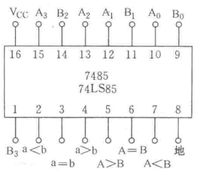
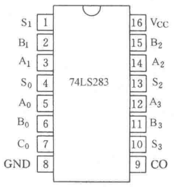
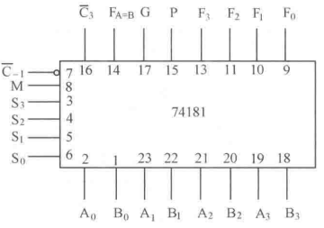
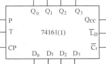

数字电路
第 1 章 数码与码制1.1 进制的表示1.2 进制的转换1.2.1 其它进制转十进制1.2.2 十进制转其它进制1.2.3 任意进制相互转换1.3 二进制运算1.4 常用的编码第 2 章 逻辑代数基础第 3 章 组合逻辑电路3.1 组合逻辑电路的简介3.2 组合逻辑电路的分析与设计3.2.1 SSI 组合逻辑电路的分析3.2.2 SSI 组合逻辑电路的设计3.3 组合逻辑电路中的竞争与冒险3.3.1 产生的原因3.3.2 消除的方法3.4 组合逻辑集成电路3.4.1 编码器3.4.2 译码器3.4.3 数据分配器3.4.4 数据选择器3.4.5 数值比较器3.4.6 算术运算电路3.4.7 可编程逻辑电路第 4 章 触发器4.1 基本触发器4.1.1 RS 触发器4.1.2 D 触发器4.1.3 JK 触发器4.1.4 T 触发器4.2 TTL 集成触发器4.3 MOS 集成触发器4.4 触发器的相互转换第 5 章 时序逻辑电路5.1 时序逻辑电路的表示方法5.2 时序逻辑电路的分析方法5.3 寄存器5.3.1 数码寄存器5.3.2 锁存器5.3.3 移位寄存器5.4 计数器5.4.1 计数器的分类5.4.2 二进制计数器5.4.3 十进制计数器5.4.4 可逆计数器5.4.5 任意进制计数器5.4.6 移位寄存器型计数器5.5 顺序脉冲发生器5.6 时序逻辑电路设计第 9 章 数模转换和模数转换9.1 数模转换器 DAC9.1.1 二进制权电阻 DAC9.1.2 R-2R 倒 T 型电阻网络 DAC9.1.3 DAC 的主要技术指标9.1.4 集成 DAC9.1.5 D/A 转换器应用9.2 数模转换器 ADC9.2.1 基本概念9.2.2 并行比较 ADC9.2.3 反馈比较 ADC9.2.4 双积分型 ADC9.2.5 主要技术指标第 10 章 数字系统分析与设计10.1 数字系统10.2 寄存器传送语言10.3 简易计算机10.3.1 基本结构A 附录A.1 组合逻辑电路芯片A.2 时序逻辑电路芯片
第 1 章 数码与码制
1.1 进制的表示
十进制数字正常表示, 其它进制数字的每一位用十进制数字表示, 并且加上括号后再右下角用十进制数字写出其进制.
如八进制 (32)8 = 26, 一百进制 (3, 14, 15)100 = 31415.
特殊的, 对于十六进制, 记 A~F 分别对应十进制的 10~15, 如 (5A)16 = 90.
1.2 进制的转换
1.2.1 其它进制转十进制
1.2.2 十进制转其它进制
若
实际计算时, 可分别求解整数部分与小数部分, 每次对
1.2.3 任意进制相互转换
欲将
特殊的, 十六进制转换为二进制, 可对每一位单独转换;
二进制转换为十六进制, 可先将每四位二进制看成一个整体.
1.3 二进制运算
二进制的加减乘除与十进制类似.
二进制负数的补码等于其反码加一.
计算
1.4 常用的编码
二–十进制代码 (BCD 代码)
恒权代码
8421 码.
2421 码.
5211 码.
非恒权代码
余 3 码.
余 3 循环码.
格雷码 (循环码)
ASCII 码.
第 2 章 逻辑代数基础
实际上, 概统里的事件运算属于可测空间
因此概统里的事件运算公式, 对于布尔代数也都成立. 数电书上列举的公式, 其实对于事件运算也都适用.
不过布尔代数也具有一些特殊的性质, 比如
异或
同或
关系
常用公式
分配律
吸收律
吸收律
交叉互换律
基本定理
代入定理
反演定理
对偶定理
第 3 章 组合逻辑电路
3.1 组合逻辑电路的简介
数字电路
按功能特点分类
组合逻辑电路
时序逻辑电路
按集成度分类
小规模集成电路 (SSI, small scale integrated circuits)
中规模集成电路 (MSI, medium scale integrated circuits)
大规模集成电路 (LSI, large scale integrated circuits)
超大规模集成电路 (VLSI, very large scale integrated circuites)
计算机管理教学 (CMI, computer managed instruction)
计算机辅助教学 (CAI, computer assisted instruction)
3.2 组合逻辑电路的分析与设计
3.2.1 SSI 组合逻辑电路的分析
步骤
电路图 -> 表达式.
化简表达式.
列出真值表.
分析、确定功能.
3.2.2 SSI 组合逻辑电路的设计
步骤
明确功能, 确定变量个数.
列真值表.
写函数表达式.
化简并画出逻辑图.
3.3 组合逻辑电路中的竞争与冒险
3.3.1 产生的原因
由于延时而产生竞争, 如果可能产生错误, 则称该竞争为冒险.
若某种输入导致运算中含有
3.3.2 消除的方法
改变表达式的形式.
增加冗余项 (如果有相切的则用圈连接起来).
引入封锁脉冲或选通脉冲.
在输出端并接滤波电容: 在消除毛刺的情况下, 电容要尽可能小.
3.4 组合逻辑集成电路
3.4.1 编码器
信息 -> 二进制 (输入多)
普通编码器
二进制编码器
以 8-3 为例
十进制编码器 (二-十进制有限编码器)
即 10-4 编码器
含标志位 GS: 有输入即为 1.
优先编码器
以 4-2 编码器为例
集成电路编码器
8-3 线优先编码器 74148
输入端: I'7, ..., I'0.
输出端: A'2, A'1, A'0, 输出反码.
选通使能端: I'S, 又称为控制端, 有效时正常工作.
扩展端: E', 正常工作且有输入时输出有效 (0).
选通输出端: S', 正常工作且无输入时为输出有效 (0).
8-3 线优先编码器 CD4532
I7, ..., I0, GS, Y2, Y1, Y0, EI, EO.
输入使能端 EI = 0, 输出恒为零.
EI = 1, 无输入, 则 EO = 1.
EI = 1, 有输入, 则 GS = 1, EO = 0.
两片 74148 或 CD4532 实现 16-4
优先编码器 74HC148 (8-3)
I7, ..., I0, Y'ES, Y'2, Y'1, Y'0, S', Y'S.
选通输入端 S' = 1, 所有输出端被封锁在高电平. (如 Y'0 = 1)
S' = 0, 无输入, 则 Y'S = 0.
S' = 0, 有输入, 则 Y'EX = 0, Y'S = 1.
优先编码器 74HC147 (10-4)
I'9, ..., I'0, Y'3, ..., Y'0.
注意: 使能端即使不用, 也要接地.
3.4.2 译码器
二进制 -> 信息 (输入少)
二进制译码器
3-8 线译码器 74138
输入端: A'2, A'1, A'0.
输出端: F'0, ..., F'7.
输入控制端: S1, S'2, S'3. (即 100 时工作)
74LS139 双二线四线译码器 (低电平有效)
1/2 74LS139
E', A0, A1, Y'0, ..., Y'3.
E' = 1, 所有输出端被封锁在高电平.
E' = 0, 正常输出 (注意低电平有效)
74LS138 (3-8) (低电平有效) ⭐️
E3, E'2, E'1, A0, A1, A2, Y'0, ..., Y'7.
注意 E3 没有非号.
只有 E3, E2, E1 为 1, 1, 0 时才正常输出.
74LS138 的应用
扩展 (5 线 - 32 线): 利用使能端.
实现三变量的 逻辑函数.
数据分配器
十进制译码器 (二–十进制译码器)
输入: A3, ..., A0, 为二进制数.
输出: F0, ..., F9, 译为十进制.
显示译码器 (代码转化器)
分类
数码重迭式
点阵式
分段式: 七段显示器
共阴: 译码器输出高电平有效
共阳: 译码器输出低电平有效
七段共阳显示器 74LS47
试灯输入 LT' = 0 (有效), 则译码器输出均为低电平 (亮灯).
灭灯输入 BI' = 0 (有效), 则译码器输出均为高电平 (灭灯).
灭零输入 RBI' = 0 (有效), 则 0 不显示.
灭零输出 RBO': 当 RBI' = 0 且数字为 0 时, RBO' = 0.
七段共阴显示器 CD4511
输出: a, b, c, d, e, f, g.
输入: A3, ..., A0.
控制端 LT', BL', LE
若 LT' = 0, 则都亮.
若 LT' = 1, BL = 0, 则灭灯.
若 LT' = BL' = LE' = 1, 则为锁存.
若 LT' = 1, BL' = 1, LE = 0, 则为正常状态.
3.4.3 数据分配器
介绍
数据分配器 (DEMUX)
又称为多路分配器或多路调节器.
单输入, 多输出.
数据选择器 (MUX)
又称为多路开关.
多输入, 单输出.
数据分配器
用 3-8 线译码器 74138 构成 8 路数据分配.
令 S1 = 1, S2 = S3 = D 即输入端, 于是可用 A2, A1, A0 实现原码输出.
令 S1 = D 即输入端, S2 = S3 = 1, 于是可用 A2, A1, A0 实现反码输出.
3.4.4 数据选择器
集成数据选择器
双四选一 74153
控制端 E' = 0 (有效) 时正常工作.
八选一 74HC151
I0, ..., I7, A2, A1, A0, EN, L, L'
L 和 L' 为输出端, Ai 为控制端, EN 为使能端.
若 EN = 1, 则输出恒为零.
若 EN = 0, 则正常输出.
74LS153 双四选一: 共用使能端
应用
实现 逻辑函数 (通过 151 或 153)
法一：若 A 和 B 作为控制端, 则将逻辑函数表示为 A'B' () + A'B () + ...
法二：利用卡诺图 (注意顺序)
扩展: 四选一 -> 十六选一
法一: 四个四选一, 输出四线, 再加一个四选一.
法二: 四个四选一, 利用对使能端的控制实现只有一个输出.
并行输入 -> 串行输出
3.4.5 数值比较器
1 位二进制比较器
A, B, FA>B, FA=B, FA<B.
输出
FA>B = AB'.
FA=B = A'B.
FA<B = A'B' + AB.
结果的互斥性
FA=B = (FA>B + FA<B)'.
其余同理.
2 位二进制比较器
A = A1A0, B = B1B0.
FA>B = (A1>B1) + (A1=B1) (A0>B0).
FA=B = (A1=B1) (A0=B0).
FA<B = (A1<B1) + (A1=B1) (A0<B0).
集成载值比较器
4 位数值比较器 74LS85
A = A3A2A1A0.
B = B3B2B1B0.
级间输入: IA>B, IA=B, IA<B.
74LS85 的扩展 (比较 2n 位数字)
串联: 需要 2n-2 个芯片, 需要 2n-2 个单位时间.
并联: 需要的芯片数更多, 但是需要的时间更短.
3.4.6 算术运算电路
一位加法器
半加器 HA
两个输入端: A, B.
两个输出端: 和端 S, 进位端 C.
S = A'B + AB' = A
C = AB.

全加器 FA
三个输入端: Ai, Bi, Ci-1.
两个输出端: Si, Ci.
实现思路 1 和 2 (略去下标)
Si = A'B'C + A'BC' + AB'C' + ABC = A
注: 只有输入奇数个 1, 才会输出 1, 于是可用全加器判断奇偶.
Ci = AB + BC + AC = (A
注: 只有输入超过一个 1, 才会输出 1.
实现思路 3: 利用两个半加器.

多位加法器
串行加法器 (慢)
并行加法器
串行进位 (慢)
超前进位: 由递推式逐项展开.
集成 4 位超前进位加法器 74LS283
8 位二进制数相加: 两个芯片的串行.
8421 BCD 码 -> 余 3 码. (即各位 + 3)
减法器
理论基础
记 A 是一个正的二进制数, 如 10010
原码
[+A]原 = 0A (如 010010)
[-A]原 = 1A (如 110010)
补码
[+A]补 = [+A]原 (如 010010)
[-A]补 = [-(2n - A)]原 (如 101110)
反码
[+A]反 = [+A]原 (如 010010)
[-A]反 = [-A']原 (如 101101)
关系
[-A]原 = 2n + A
[-A]反 = [-(2n - 1 - A)]原
[-A]补 = [-A]反 + 1
欲计算 ±A ± B, 确定所需位数之后,
将 A 与 B 取为补码后相加, 舍去过高的进位,
结果再次取为补码.
算术逻辑单元 ALU
集成算术逻辑单元
3.4.7 可编程逻辑电路
PLD (Programmable Logic Device) 的结构
PLD 的表示方式
连接方式
实心点 (不可编程)
叉点 (可以编程)
无点 (未相连)
基本门电路的表示方式

编程技术: 二极管 + 熔丝工艺.
PLD 的分类
低密度 PLD (LD)
PROM: 可编程只读存储器 (programmable read-only memory).
与阵列固定, 或阵列可编程.
PLA: 可编程逻辑阵列 (programmable logic array).
与或阵列可编程.
PAL: 可编程阵列逻辑 (programmable array logic)
与阵列可编程, 或阵列固定.
GAL: 通用阵列逻辑 (general array logic)
与阵列可编程, 或阵列固定.
高密度 PLD (HD)
EPLD
CPLD
FPGA
组合逻辑电路的 PLD 实现 (以全加器为例)

第 4 章 触发器
4.1 基本触发器
4.1.1 RS 触发器


4.1.2 D 触发器

4.1.3 JK 触发器


4.1.4 T 触发器

4.2 TTL 集成触发器

4.3 MOS 集成触发器
4.4 触发器的相互转换

第 5 章 时序逻辑电路
5.1 时序逻辑电路的表示方法
结构: 存储电路 (+ 组合电路).
概念
现态 Qn.
次态 Qn+1.
分类
按触发方式
同步时序电路: 所有触发器公用一个时钟信号.
异步时序电路: 不再公用一个时钟信号 (有的触发器的时钟信号是另一个触发器的输出).
另一种分类方式
米里型: 输出状态与输入和现态有关.
莫尔型: 输出状态仅与现态有关; 输入可以影响现态.
记号
组合电路的输入信号为 X / I, 输出信号为 F / O,
存储电路的输入信号为 Z / E, 输出信号为 Q / S.
时序逻辑电路的表示方法
逻辑表达式
输出方程: F(tn) = W[X(tn), Q(tn)].
状态方程: Q(tn+1) = G[Z(tn), Q(tn)].
驱动方程 (激励方程): Z(tn) = H[X(tn), Q(tn)].
功能表
状态表
状态图
波形图
5.2 时序逻辑电路的分析方法
求解五大方程
时钟方程: 对于异步时序电路, 列出 CP 的输入信号.
驱动方程: 即触发器输入信号的逻辑表达式.
特性方程: 即触发器的输入输出方程.
驱动方程
输入信号
绘制直观图表
一般的，对于米里型
功能表（A Q1 Q0 | Q1n+1 Q0n+1 Z）
状态转换表（Q1 Q0 \ A | 0 | 1 | Z）
状态转换图（节点：Q1 Q0，路径：A / Z）
（时序波形图）
特殊的，对于莫尔型
功能表（A Q1 Q0 | Q1n+1 Q0n+1 Z）
状态转换表（Q1 Q0 \ A | 0 | 1 | Z）
状态转换图（节点：Q1 Q0 / Z，路径：A）
（时序波形图）
特殊的，如果无输入与输出，仅列写状态表
状态表（Q3 Q2 Q1）
循环的起始点用箭头连接
如果触发器数量较多，可不列写 Q 的表达式，而利用口诀.
这里以无输入与输出为例，若有输入与输出，可直接在表格中添加.
状态转换真值表（
状态转换图（节点：
说明逻辑功能
计数器
需要检查是否无挂起（自启动）
有挂起的解决方式
置初始值
修正电路
举例
同步六进制计数器（教材例 1）
异步五进制计数器（教材例 2；视频 3 例 2）
异步六进制计数器（视频 3 例 1）
异步七进制计数器（视频 3 例 3）
序列检测器
1111 序列检测器（教材例 2；视频例 1）
异步时序逻辑电路的分析
无反馈线（从异步部分到时序部分）：先分析同步，再分析异步
有反馈线：一步一步分析.
5.3 寄存器
5.3.1 数码寄存器
工作方式
双拍: 接受两个脉冲, 先清零, 后接收数码.
单拍: 只需一个接受脉冲即可, 优于双拍.
集成数码寄存器又称为 N 位 D 触发器.
并行输入 - 并行输出.
常用芯片
74HC374：边沿触发 8 位（并行/并行）
74HC373：电平触发 8 位（并行/并行）
5.3.2 锁存器
一位 D 锁存器
CP = 1 时, 为基本 RS 触发器.
CP ↓, 则为锁存.
5.3.3 移位寄存器
功能
串行 - 并行
并行 - 串行
4 位双向移位寄存器 74194
| 工作状态 | |||
|---|---|---|---|
| 0 | X | X | 清零 |
| 1 | 0 | 0 | 保持 |
| 1 | 0 | 1 | 右移 |
| 1 | 1 | 0 | 左移 |
| 1 | 1 | 1 | 送数 |
并行 - 串行数据转换.
5.4 计数器
应用: 时钟脉冲计数、定时、分频、产生节拍脉冲、数字运算.
5.4.1 计数器的分类
按触发方式
同步计数器
异步触发器
按计数容量
n 位二进制计数器: 2n 个状态.
n 位十进制计数器: 10n 个有效循环状态.
n 位任意进制计数器
按数的增减分类
加法计数器
减法计数器
可逆计数器: 可加可减.
双时钟加/减计数器
单时钟加/减计数器
5.4.2 二进制计数器
4 位同步二进制加法计数器 74161 (中规模集成计数器)
清零:
预置数 (送数):
注意清零是立刻清零，预置数要等到下一个脉冲.
计数: P = T = 1 时计数;
到 1111 时, 进位输出 QCC = 1,
再输入一个计数脉冲后, 返回 0000 状态, QCC = 0.
保持
P = 0, T = 1 时保持工作状态, 进位输出状态不变;
P = 1, T = 0 时保持工作状态, 进位输出 QCC = 0.
应用
两片 74161 连接成 8 位同步二进制加法器.
两片 74161 连接成 8 位异步二进制加法器.
5.4.3 十进制计数器
8421 编码十进制计数器
TTL 型: 74160
MOS 型: CD40160
二–五–十进制异步加法器
74290.
5.4.4 可逆计数器
4 位同步二进制加/减计数器
单时钟结构: 74191, 74169, CD4516
双时钟结构: 74193, CD40193
同步十进制加/减计数器
单时钟结构
74190
0 加 1 减
0 允许，1 不允许（即保持）
74168, CD4510
双时钟结构: 74192, CD40192
5.4.5 任意进制计数器
乘数法: NM 进制计数器可由 N 进制计数器和 M 进制计数器组成.
复位法: M (M > N) 位计数器输入 N 个计数脉冲后归零.
思路一: 利用清零端.
思路二: 利用预置数.
置数法: 即跳过某一段长为 M - N 的序列.
置最小数.
置最大数.
置中间数.
5.4.6 移位寄存器型计数器
环形计数器
扭环形计数器 (约翰逊计数器)
注: 最好选择相邻状态只有一个变量不同的循环, 这样不会产生竞争冒险现象.
5.5 顺序脉冲发生器
顺序脉冲发生器 (节拍脉冲发生器)
组成: 计数器 (+ 译码器)
消除干扰脉冲 (竞争–冒险现象导致的尖脉冲)
将选通脉冲或封锁脉冲加在控制输入端
选用扭环形计数器, 使得循环中相邻状态只有一个变量不同.
选用环形计数器.
5.6 时序逻辑电路设计
设计步骤
画出状态转换图或状态转换表.
状态化简.
状态分配.
确定触发器类型, 求出驱动方程和输出方程.
画出电路图.
检查电路是否能自启动
第 9 章 数模转换和模数转换
9.1 数模转换器 DAC
9.1.1 二进制权电阻 DAC
电阻的值域范围太宽, 不易于集成, 且对精度的要求高.
9.1.2 R-2R 倒 T 型电阻网络 DAC
9.1.3 DAC 的主要技术指标
转换误差
输出满刻度 FSR 的百分数.
最低有效位 LSB 的倍数.
建立时间.
9.1.4 集成 DAC
电流输出型 8 位 D/A 转换电路 DAC0832.
9.1.5 D/A 转换器应用
9.2 数模转换器 ADC
9.2.1 基本概念
采样、保持
采样定理: 采样频率应大于模拟信号最高频率分量的两倍.
三种采样–保持电路.
性能指标: 采集时间, 保持电压下降速率.
量化、编码
9.2.2 并行比较 ADC
转换速度快.
n > 4 时电路复杂.
9.2.3 反馈比较 ADC
计数型 ADC: 速度慢.
逐次逼近型 ADC: 速度较快、抗干扰特性较差.
9.2.4 双积分型 ADC
模拟电压 → 时间间隔 → 数字量.
抗干扰能力强.
工作性能稳定.
工作速度低.
只能用于变化缓慢的电压.
9.2.5 主要技术指标
转换速度
分解度: 若 n 位 ADC 满量程输入模拟电压为
量化误差.
精度.
输入模拟电压范围.
第 10 章 数字系统分析与设计
10.1 数字系统
数据处理器
包含若干子系统, 如计数器、寄存器、译码器等.
包含组合逻辑电路和时序逻辑电路.
控制器: 管理数据处理器的子系统.
(输入设备、输出设备)
10.2 寄存器传送语言
传送语句 P: B ← A
并列传送语句 P1: A ← B, P2: C ← D
总线传送语句
输入/输出线线端传送语句
存储器传送语句
条件语句
算术微操作语句
逻辑微操作语句
移位微操作
10.3 简易计算机
10.3.1 基本结构
主机
中央处理器 (CPU)
运算器 (算术逻辑单元)
控制器
存储器
外部设备: 输入/输出设备
A 附录
A.1 组合逻辑电路芯片
| 功能 | 分类 | 芯片型号 | 引脚图 |
|---|---|---|---|
| 编码器 | 8-3 线优先编码器 | 74148 |  |
| 译码器 | 3-8 线二进制译码器 | 74138 |  |
| 数据选择器 | 双四选一 | 74153 |  |
| 八选一 | 74151 |  | |
| 数值比较器 | 4 位 CMOS 比较器 | MC14585 |  |
| 4 位 TTL 比较器 | 7485 |  | |
| 算术运算电路 | 加法器 | 半加器 |  |
| 全加器 |  | ||
| 4 位超前进位加法器 | 74LS283 |  | |
| 算术逻辑运算单元 | 74181 |  | |
| 奇偶校验电路 | 8 位奇偶发生器/校验器 | 74180 |  |
A.2 时序逻辑电路芯片
| 功能 | 分类 | 型号 | 引脚图 |
|---|---|---|---|
| 寄存器 | 4 位数码寄存器 | 74LS175 | |
| 8 位 D 锁存器 | 74LS373 |  | |
| 4 位双向移位寄存器 | 74194 |  | |
| 计数器 | 4 位同步二进制计数器 | 74161 |  |
| 十进制计数器 | 74160 | ||
| 十进制计数器 | CD40160 |  | |
| 二-五-十进制异步计数器 | 74290 | ||
| 可逆计数器 | 74190 |  |